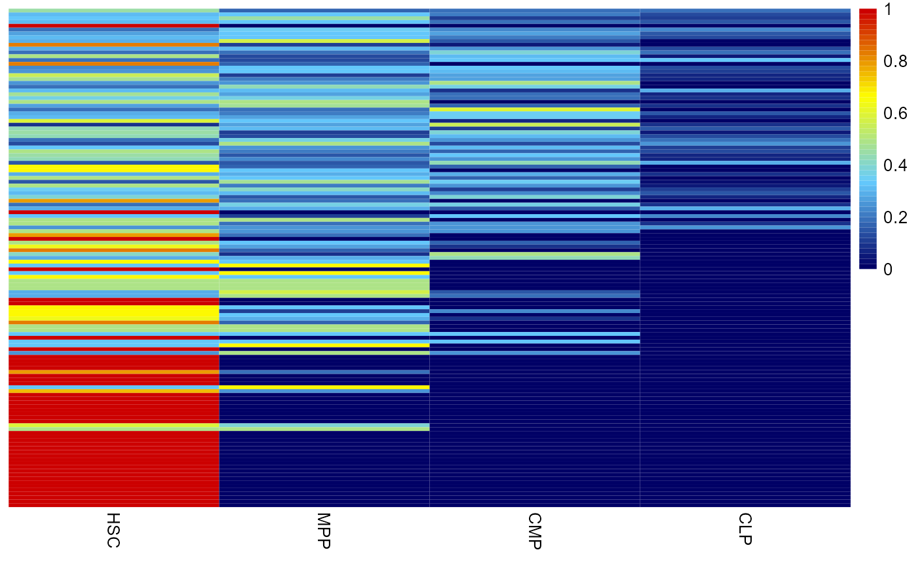
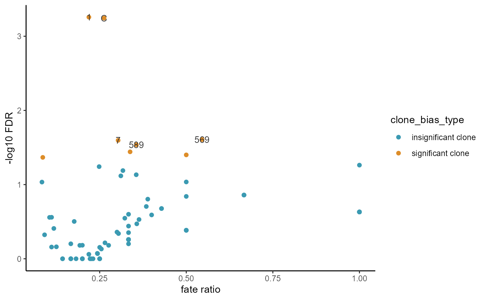

blood_analysis
blood_analysis.RmdLoad package and data
library(FateMapper)
load(system.file("extdata", "blood_csc.rda", package = "FateMapper"))Data introduction
The blood lineage tracing dataset is represented as a dataframe with four columns. Each row in the dataset corresponds to a single cell, where the first and second columns contain the embedding information extracted from scRNA-seq data. The third column provides the cell-related barcode derived from lineage tracing data. Lastly, the fourth column represents the annotated cell type of each cell.
head(cell_fate)
#> DC_1 DC_2 barcodes celltype
#> CLP_AAACCCACAAAGGGCT -2.038864 -0.20265869 A CLP
#> CLP_AAACGAACATCCGCGA -1.500590 -0.07898276 1 CLP
#> CLP_AAACGAATCAAGTCTG -1.450054 -0.03668697 1234569 CLP
#> CLP_AAACGCTGTACCGGCT -1.429273 -0.05674879 1 CLP
#> CLP_AAACGCTGTTATCTGG -2.466002 -0.25670260 9 CLP
#> CLP_AAAGAACCATACTGTG -1.056272 0.01399053 12345HG CLPclone profile
Firstly, we map the clone expression in pseudo-bulk cell types through fate_mapping() function
barcode_freq = fate_mapping(cell_fate,show_row = F,cluster_cols = F,order_use =
c('HSC','MPP','CMP','CLP'))
cell type similarity analysis based on clone expression
Next, we calculate the spearman correlation between each cell type based on clone expression to estimate the lineage relationships between cell types.
ct_similarity = cell_type_fate_similartiy(cell_fate[,3:4])Building lineage tree
Building lineage tree based on neighbor-joining method.
lineage_tree(cell_fate[,3:4])
#> Using sample_similarity as value column: use value.var to override.Clone fate bias analysis
Then, we calculate the clone fate bias based on Fisher-Exact test. Fate bias represent which fate/cell_type the clone is enriched for (e.g. Which cell type does this clone mainly develop into). In this analysis we calculate the clone fate bias for CMP
CMP_bias = clone_fate_bias(cell_fate[,3:4],fate_use = 'CMP')
head(CMP_bias)
#> clone_name fate_use clone_size fate_ratio pvalue
#> X1 1 CMP 1380 0.218840579710145 0.000552808822115242
#> C C CMP 643 0.262830482115086 0.000569016009398279
#> X569 569 CMP 11 0.545454545454545 0.0246961006377305
#> X7 7 CMP 155 0.303225806451613 0.02531766742626
#> X589 589 CMP 59 0.355932203389831 0.0289961604540024
#> X12C 12C CMP 74 0.337837837837838 0.0361563061940716
#> fdr
#> X1 0.000552808822115242
#> C 0.000569016009398279
#> X569 0.0246961006377305
#> X7 0.02531766742626
#> X589 0.0289961604540024
#> X12C 0.0361563061940716
fate_bias_summary(CMP_bias)
Clone embedding
Then we visualize the CMP bias clone on the embedding plot
plot_clone_embedding(CMP_bias[3,1],cell_fate,colors = c(rgb(200/255,200/255,200/255),
rgb(239/255,153/255,81/255)))